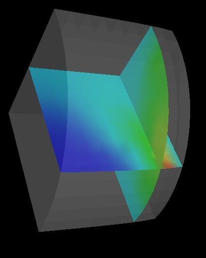

Ex:
0.body:> ShowCut oX .5 oY .5 oZ .2 nX 0 nY 0 nZ 1
0.body:> ShowCut oX .5 oY .5 oZ .2 nX 0 nY 1 nZ 0

| Display 3-D body as 2-D cutting plane(s) by specifying origin and normal
of plane.
Ex:
|
|  | The "ShowCuttingPlane" command can also be combined with the "ShowContours"
command to show cutting planes with contour lines.
Ex:
|
 |